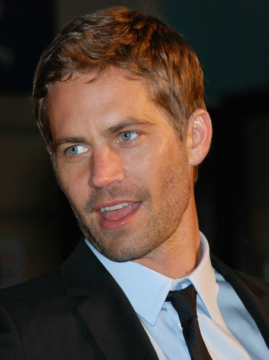
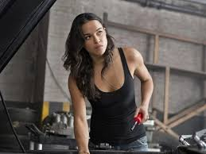
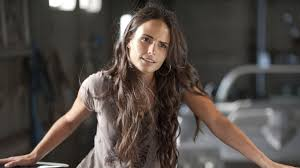
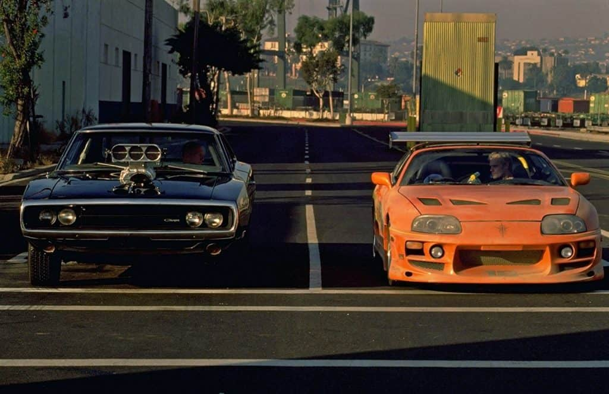
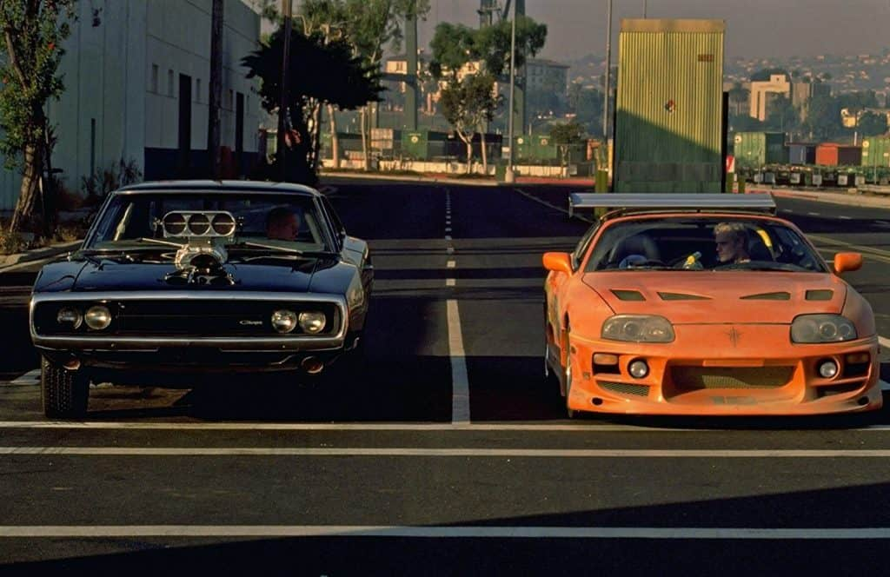

Elenco

Vin Diesel
Dominic Toretto - O líder da equipe e mestre das corridas de rua.

Paul Walker
Brian O'Conner - Ex-policial que se tornou parte da família Toretto.

Michelle Rodriguez
Letty Ortiz - Namorada de Dominic Toretto, faz parte de sua equipe de corredores.

Jordana Brewster
Mia Toretto - Irmã de Dominic Toretto, que durante o filme se relaciona com Brian O'Conner.
 
